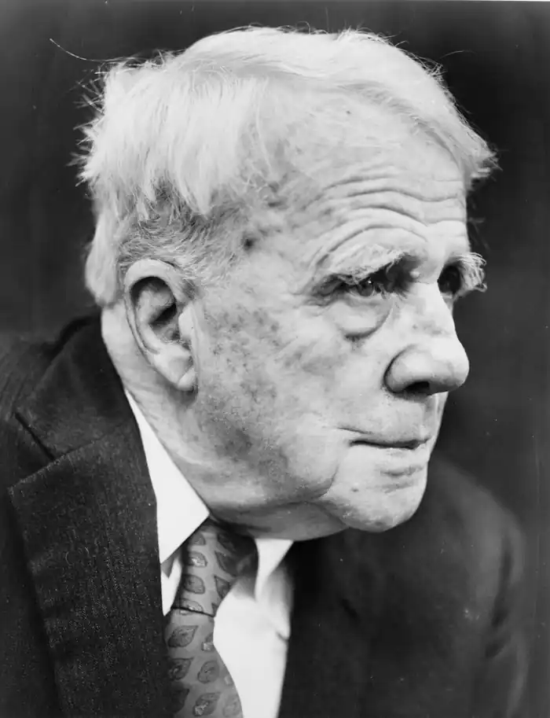
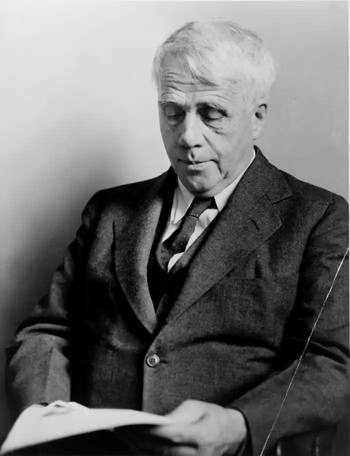

ФРОСТ, Роберт (Frost, Robert — 26.03.1874, Сан-Франціско, Каліфорнія — 29.01.1963, Бостон, Массачусетс) — американський поет.Уже в 1920-х pp. його визнали живим класиком Америки, творчість якого слід вивчати у школі. Протягом свого довгого життя він здобув чимало нагород, почесних звань у багатьох університетах. Фрост чотири рази ставав лауреатом Пулітцерівської премії — унікальний випадок в історії американської літератури. Він міг пишатися рідкісним досягненням: його поезія була популярною не лише в академічних колах, а й серед широкої читацької публіки. Книга його вибраних віршів, яку уклав Л. Антермайєр ("The Pocket Book of Robert Frost's Poems", 1946) — одна з найуславленіших поетичних книг в Америці. Проте така гучна слава призвела до того, що в свідомості читачів сформувався певний стереотип. Фрост упродовж десятиліть сприймали як патріархального поета-фермера, котрий оспівував у віршах природу двох штатів Нової Англії — Нью-Гемпширу і Вермонта. Міф про простакуватого поета-фермера, далекого від інтелектуальних сумнівів, проте обдарованого тонким відчуттям природи, зовсім заступив реального Фроста, який був одним із найцікавіших продовжувачів філософської лінії в американській поетичній традиції.
Сам Фрост також значною мірою сприяв створенню спрощеного уявлення про себе. Він ретельно захищав своє життя від стороннього втручання, надбанням широкої громадськості ставали лише поодинокі деталі та події з біографії поета. За іронією долі, Фрост, який здобув славу співця Нової Англії, розташованої на сході Америки, народився на заході, у Сан-Франціско. Його батько, сільський учитель за фахом, приїхав у Каліфорнію з Нової Англії разом із молодою дружиною, щоби редагувати газету демократичної партії. Отож, коли батько помер від туберкульозу, родина вирішила повернутися на батьківщину предків. Фросту тоді було лише 10 років, і вирішальний вплив на розвиток особистості майбутнього поета справила його мати Ізабел Моуді. Саме вона приохотила хлопця до літератури. У 14 років Фрост відкрив для себе поезію, а через рік опублікував перший вірш у одній із шкільних газет міста Лоуренс, де тоді жила сім'я. У родинних переказах згадується, що коли Фрост вперше заробив 15 доларів, опублікувавши вірш у журналі національного значення, його дід висловив сумнів з приводу того, що можна прожити літературною працею, і запропонував онукові відбути випробувальний термін. Дев'ятнадцятирічний поет повинен був пообіцяти, що назавжди покине віршування, якщо через рік не досягне успіху. У відповідь Фрост попросив дати йому 20 років замість одного. За дивним збігом обставин, саме через 20 років його перша книга побачила світ і принесла поетові славу. Але ці роки були для Фроста роками злиднів і тяжких поневірянь.
Фрост змінив десятки професій: обслуговував прядильні верстати на фабриці, вчителював, писав статті про догляд за курми для журналів з птахівництва, дописував до газет, був фермером. У юності він двічі спробував здобути освіту, провчившись два місяці у Дармут-коледжі та півтора року в Гарварді. У Гарвардському університеті Фрост особливо захоплювався історією філософії, яку викладав американський філософ Д. Сантаяна, і вивченням класичної літератури. Але поет погано вкладався у будь-які рамки, відтак йому довелося покинути Гарвард. На той час Фрост був уже кілька років одружений з Елінор Байт. Фінансове становище сім'ї було вельми сутужним. Намагаючись допомогти молодятам, дід купив для Фроста ферму поблизу селища Дьєррі, у штаті Нью-Ґемпшир. З 1900 до 1906 р. Фрост намагався звести кінці з кінцями, хазяйнуючи на фермі. У 1906 р. йому пощастило отримати місце вчителя англійської літератури в школі-інтернаті Пінкертона у Дьєррі. Тоді в сім'ї Фроста було вже п'ятеро дітей. Але незважаючи на труднощі та клопоти, Фрост упродовж усього цього часу не полишав поетичної творчості. Коли ж у 1911р. сім'я продала ферму і вирушила до Англії на пошуки кращого життя, у валізі Фроста лежав рукопис його першої збірки. В Англії сім'я оселилася в Букінгемширі, і Фрост знову спробував заробляти на прожиток фермерською працею. Фросту поталанило з сусідами: ними виявилися відомі англійські поети В. Гібсон і Л. Аберкромбі. Вони належали до кола поетів-георгіанців, які в дусі вікторіанського романтизму оспівували красу сільських куточків ідилічної старої Англії. Ґеоргїанці славилися своїм консерватизмом у ставленні до поетичного стилю. До Фроста, котрий простою, невигадливою мовою писав про звичайне сільське життя, вони поставилися як до однодумця. Що ж до самого Фроста, то він вперше зустрів людей, з якими міг фахово поговорити про поезію. Цілковите порозуміння виникло між Фростом і критиком Едвардом Томасом, котрий також належав до кола ґеорґіанців. Фрост зауважив у свого нового друга неабиякий поетичний талант і переконав його писати вірші. В Англії Фрост уперше зазнав літературного успіху. Вдова видавця Девіда Натта погодилася на свій страх і ризик видати збірку нікому не відомого американського поета. У 1913 р. побачила світ книга "Воля хлопчика" ("A Boy's Will"), назва якої вказувала на зв'язок з національною поетичною традицією, оскільки вона запозичена із вірша Г. Лонгфелло "Моя втрачена юність". Збірка Фрост поділена на три розділи, які символізують три етапи становлення особистості. До книги увійшли вірші, написані з 1862 до 1912 р. Дистанція між юним автором окремих віршів і зрілим автором всієї книги позначена іронічним підзаголовками, у яких Ф. звертається до кожного з них зокрема. Першу книгу Фроста критики помітили. Другу — "На північ від Бостона" ("North of Boston", 1914) — зустріли захопленими відгуками. Мелодійна наспівність вірша у цій збірці змінилася інтонаціями розмовного мовлення. Як основну поетичну форму Фрост використовував драматичні діалоги-розповіді. Героями його віршів були ново-англійські фермери, звичайні люди, у яких, за висловом самого Фроста, "ніхто інший не зауважив би героїв". Усе життя людини відтворене у вірші "Смерть наймита". Сайлас, старий батрак, прийшов помирати на ферму до чужих людей, тому що надто бідний і гордий, щоби просити допомоги у рідного брата. Про долю Сайласа читач дізнається з розмови фермера та його дружини. Напруження створюється між трагізмом людського життя і буденністю тону та самої комунікативної ситуації. Мужність, якої вимагає буденне життя, — один із найважливіших і постійних мотивів фростової творчості. Збірку "На північ від Бостона" більшість англійських критиків розглядали як свідчення традиційності Фроста, його прихильності до георгіанської поезії. Але після виходу книги Фрост здобув авторитет і серед прибічників т. з. "нової" поезії. В Англії про нього писав Е. Паунд, один з головних натхненників нового підходу до по-— етичної творчості. Коли ж Фрост через сім місяців після початку Першої світової війни повернувся в Америку, то з'ясував, що тут його вважають одним із "нових" поетів. Популярності Фроста сприяв журнал "Поетрі", твердиня сучасних поетичних течій, що видавався у Чикаго. У рік повернення поета на батьківщину Генрі Холт перевидав обидві збірки Фроста. Тепер, коли з'явилася реальна можливість заробляти на прожиток суто літературною працею. Фрост усе-таки вподобав собі можливість оселитися на фермі, купленій ним у гористій частині Нью-Гемпширу. З плином часу він дедалі менше займався фермерством. Поетичні збірки виходили, слава зростала. Особливо значний успіх здобули книги "Міжгір'я" ("Mountain Interval", 1916), "Нью-Ґемпшир" ("New Hampshire", 1923, Пулітцерівська премія), "Західна ріка" ("West-Running Brook", 1928), а також виданий у 1930 р. томик вибраних віршів ("Collected Poems", Пулітцерівська премія). Характер фростової творчості з роками майже не змінювався. У сприйнятті читачів поет зберігав репутацію, створену першими книжками. Ґеоргіанці і критики з "Поетрі" звеличували його поезію за одне й те саме: природність інтонації, майстерну пейзажну лірику, змальовування речей "такими, якими вони є": Вечеря на столі, пора до хати —Від праці відриваєш ти мене,Та мушу я цвіт яблунь поховатиВ скупій землі (це квіття запашнеІ ніжне, з ним помішана квасоля,У пелюстках — поморщений горох), А може, ти забудеш, нащо з поляМене зовеш, і будем далі вдвохЗемлі весняної рабами. Гріє,Горить любов, допоки в ґрунт кладемЗерно, до часу, як земля стемнієВід бур'яну, і паросток ножем Проткнеться, й вигнуте тільце рослиниОкрушини землі із себе скине.("Садячи", тут і далі Д. Павличка)Сам Фрост не схвалював експериментів у поезії. У розмові з поетом і прозаїком Р. П. Ворреном та критиком В.В. Бруксом він зауважив, що для нього писати верлібром — однаково, що й грати у теніс без сітки. Але, попри певний консерватизм, Фрост не був і архаїстом. Його поетика ґрунтується на одному з найдавніших розмірів англомовної поезії — білому п'ятистопному ямбові. Вдавшись до звичного для читачів розміру, Фрост наче розколов його зсередини, реалізувавши досі ще не виявлені можливості традиційного метру. Поет прагнув такого природного звучання вірша, що чимало його творів читачі сприймають як просторічні, незважаючи на те, що в них використовується переважно книжна лексика. В одному із своїх інтерв'ю Фрост перефразував В. Вордсворта, котрий радив писати, "не відриваючи очей від об'єкта". Фростів метод — писати, "не перестаючи слухати голос". При цьому він виступав проти музикальності вірша, не підкріпленої "драматичним смислом" (вислів Фроста). У цьому аспекті, як і в багатьох інших, Фрост продовжує традиції, закладені американською романтичною поезією. У його творчості виразно простежується зв'язок з поетичною теорією і практикою Р.В. Емерсона, поезією Ґ.В. Лонгфелло. Визначаючи сутність поетичної творчості, Фрост не раз висловлював емерсонівські за духом думки: поезія "повинна бути одкровенням для поета так само, як і для читача"; "над віршем можна працювати, коли він уже існує, але не можна силоміць примусити його з'явитися"; "готовий вірш — той, у якому почуття віднайшло свою думку, а думка знайшла свої слова" (було надруковано на суперобкладинці першого видання "Західної ріки"). У поезії Фроста думка відіграє визначальну роль, але це особлива, поетична думка, що існує лише в конкретній образній системі і є гармонійним поєднанням ідеї з почуттям.